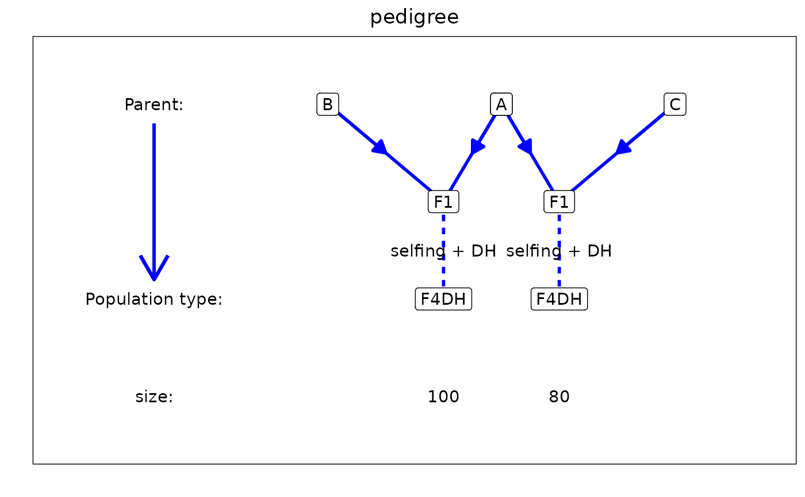

Creates a plot of an object of S3 class gDataMPP. The following types
of plot can be made:
genMapA plot of the genetic map.
allGenoA plot showing for all genotypes the IBD probabilities of the parent with the highest probability per marker.
singleGenoA plot for a single genotype showing the IBD probabilities for all parents across the genome.
pedigreeA plot showing the structure of the pedigree of the population.
See the respective sections for more details on the plots.
Arguments
- x
An object of class
gDataMPP.- ...
Further arguments to be passed on to the actual plotting functions.
- plotType
A character string indicating the type of plot to be made. One of "genMap", "singleGeno", "allGeno" or "pedigree".
- genotype
A character string indicating the genotype for which the plot should be made. Only for
plotType = "singleGeno".- title
A character string, the title of the plot.
- output
Should the plot be output to the current device? If
FALSE, only a ggplot object is invisibly returned.
genMap
A plot is made showing the lengths of the chromosomes and the position of
the markers that are present in the map. It is possible to highlight one
or more markers using the extra parameter highlight.
allGeno
A plot is made showing all genotypes and markers. Each combination of genotype and marker is colored according to the parent with the highest probability. A darker color indicates a higher probability.
singleGeno
A plot is made for a single genotype, specified by
genotpye = "name_of_genotype" showing the IBD probabilities for the
selected genotype for all parents across the genome.
pedigree
A plot is made showing the structure of the pedigree for the population in
the gDataMPP object.
Examples
## Read phenotypic data.
pheno <- read.delim(system.file("extdata/multipop", "AxBxCpheno.txt",
package = "statgenMPP"))
## Rename first column to genotype.
colnames(pheno)[1] <- "genotype"
## Compute IBD probabilities for simulated population - AxB, AxC.
ABC <- calcIBDMPP(crossNames = c("AxB", "AxC"),
markerFiles = c(system.file("extdata/multipop", "AxB.txt",
package = "statgenMPP"),
system.file("extdata/multipop", "AxC.txt",
package = "statgenMPP")),
pheno = pheno,
popType = "F4DH",
mapFile = system.file("extdata/multipop", "mapfile.txt",
package = "statgenMPP"),
evalDist = 5)
## Plot the genetic map.
plot(ABC, plotType = "genMap")
## Plot the genetic map and highlight marker EXT_3_30.
plot(ABC, plotType = "genMap", highlight = "EXT_3_30")

## Plot the IBD probabilities across the genome for all genotypes.
plot(ABC, plotType = "allGeno")
## Plot the IBD probabilities for genotype AxB0001.
plot(ABC, plotType = "singleGeno", genotype = "AxB0001")
## Plot the pedigree.
plot(ABC, plotType = "pedigree")
